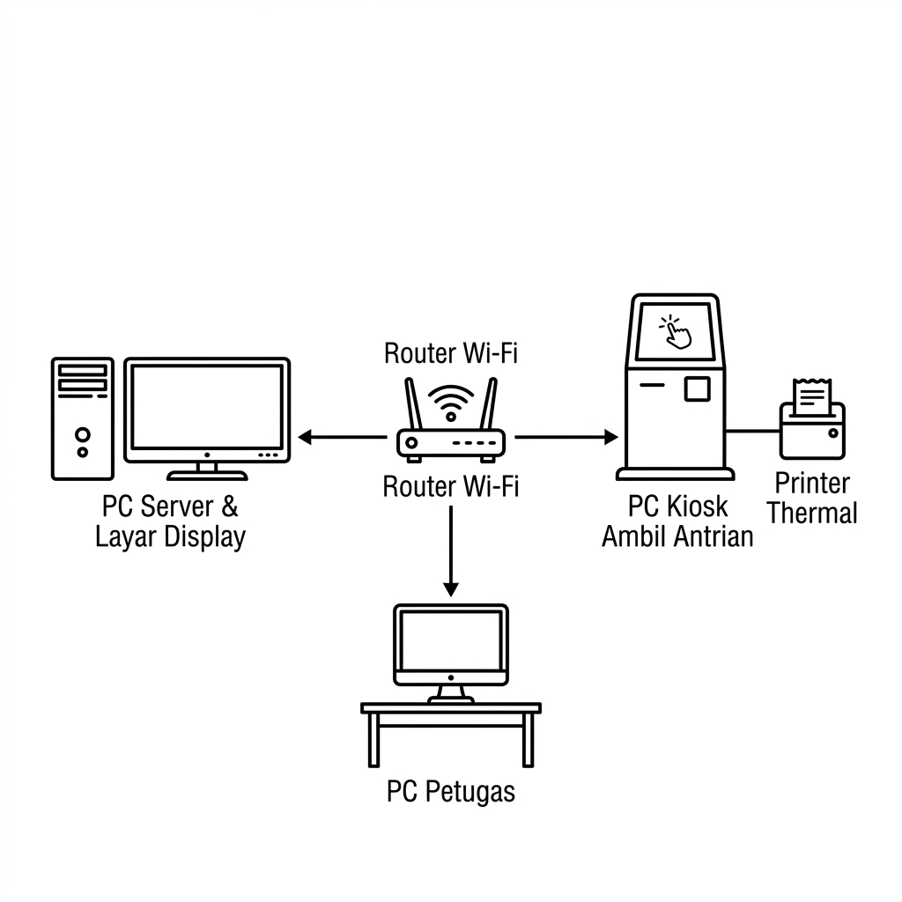

Panduan Sistem Antrian
Modern
Panduan lengkap penggunaan aplikasi antrian berbasis .exe untuk komputer server, petugas loket, kiosk ambil antrian, dan layar display.
Arsitektur Sistem
Peran masing-masing perangkat dalam jaringan
Komputer Server
Menjalankan file nomor-antrian.exe. Semua perangkat lain terhubung ke komputer ini.
http://<IP-SERVER>:3000Komputer Petugas Loket
Buka browser, akses halaman /counter untuk memanggil nomor antrian.
…/counterKomputer Ambil Antrian
Layar sentuh mandiri untuk pengunjung. Terhubung ke printer kasir 58mm.
…/kioskLayar Display
TV/monitor di ruang tunggu yang tersambung ke PC Server. Buka dari browser PC server.
localhost:3000/display
Diagram koneksi lokal: PC Server (yang menjalankan program `.exe` dan menampilkan layar display TV) bertindak sebagai pusat data. PC Petugas dan PC Kiosk terhubung ke router yang sama untuk mengakses server.
Semua perangkat (server, petugas, kiosk, display) harus terhubung ke jaringan Wi-Fi atau LAN yang sama. Sinkronisasi berjalan real-time via WebSocket — tanpa perlu refresh browser.
Kebutuhan Sistem
Spesifikasi minimum sebelum memulai
| Kebutuhan | Detail |
|---|---|
| Browser | Google Chrome atau Microsoft Edge (versi terbaru) |
| Instalasi | Tidak perlu install apapun — cukup browser |
| Jaringan | Terhubung ke Wi-Fi / LAN yang sama dengan server |
| OS | Windows, Mac, atau Linux (semua didukung) |
Setup Awal — Setting Printer Kasir 58mm
Dilakukan sekali saja di komputer kiosk (ambil antrian)
-
1
Hubungkan printer kasir 58mm via kabel USB ke komputer kiosk. Nyalakan printer dan pastikan lampu indikator menyala normal.
-
2
Pasang kertas thermal 58mm ke dalam printer. Pastikan kertas sudah terisi dengan benar.
Unduh driver sesuai merek printer Anda:
| Merek | Situs Driver |
|---|---|
| Epson TM / TM-T20 | epson.com/drivers |
| Xprinter / XP-58 | xprinter.net |
| Rongta RPP02 | rongtatech.com |
| Generic / POS-58 | Cari "Generic ESC/POS 58mm driver" |
-
1
Jalankan installer driver → klik Next → Accept → Install sampai selesai. Restart komputer jika diminta.
-
1
Buka Control Panel → Devices and Printers. Klik kanan pada printer kasir → Set as default printer.
-
2
Klik kanan lagi → Printing preferences → tab Paper / Media. Pilih ukuran 58mm × 210mm. Jika tidak ada, buat ukuran kustom: lebar
58mm, tinggi80mm. -
3
Klik OK dan simpan. Coba cetak halaman test dari Devices and Printers untuk memastikan printer berfungsi.
Setup Awal — Izinkan Firewall Windows
Dilakukan sekali saja di komputer server
-
1
Saat pertama kali menjalankan nomor-antrian.exe, Windows akan menampilkan popup Windows Defender Firewall.
-
2
Pilih "Allow access" / "Izinkan akses" untuk jaringan Private. Ini agar komputer lain di jaringan yang sama dapat terhubung ke server.
-
3
Jika popup tidak muncul, lakukan secara manual:
Control Panel → Windows Defender Firewall → Allow an app through firewallCari
nomor-antrian.exedan centang kolom Private, lalu klik OK.
Jika firewall tidak diizinkan, komputer petugas dan kiosk akan menampilkan status Server Terputus meskipun server sudah berjalan.
Setup Awal — Cari IP Address Server
Diperlukan agar komputer klien bisa mengakses aplikasi
-
1
Jalankan nomor-antrian.exe terlebih dahulu. IP server akan muncul otomatis di jendela konsol hitam yang terbuka. Cari baris bertuliskan:
Output KonsolAkses jaringan lokal: http://192.168.1.100:3000
Nomor 192.168.1.100 adalah IP server Anda (berbeda tiap jaringan).
-
2
Atau cari secara manual lewat Command Prompt: tekan
Win + R→ ketikcmd→ Enter, lalu ketik:Command PromptipconfigCari IPv4 Address pada adapter Wi-Fi atau Ethernet yang aktif.
-
3
Catat IP tersebut dan bagikan ke semua komputer klien (petugas, kiosk, display).
Agar IP server tidak berubah setiap restart, atur IP Statis di Control Panel → Network & Sharing Center → Change Adapter Settings → klik kanan adapter → Properties → IPv4 → "Use the following IP address".
Setup Awal — Buat Shortcut Kiosk (Silent Print)
Agar printer mencetak tiket otomatis tanpa dialog konfirmasi
Saat nomor-antrian.exe pertama kali dijalankan, shortcut Ambil Antrian langsung dibuat otomatis di Desktop komputer server. Gunakan shortcut tersebut di komputer kiosk.
Jika perlu membuat shortcut secara manual di komputer kiosk lain:
-
1
Klik kanan di Desktop → New → Shortcut.
-
2
Pada kolom lokasi, masukkan (ganti IP sesuai server Anda):
Target Shortcut — Google Chrome"C:\Program Files\Google\Chrome\Application\chrome.exe" --kiosk --kiosk-printing http://192.168.1.100:3000/kiosk
Target Shortcut — Microsoft Edge"C:\Program Files (x86)\Microsoft\Edge\Application\msedge.exe" --kiosk --kiosk-printing http://192.168.1.100:3000/kiosk
-
3
Klik Next, beri nama shortcut "Ambil Antrian", klik Finish.
Chrome/Edge akan fullscreen dan taskbar tersembunyi saat menggunakan flag --kiosk. Untuk keluar dari mode kiosk, tekan Alt + F4.
Operasional Harian — Jalankan Server
Dilakukan setiap hari sebelum mulai pelayanan
-
1
Pastikan komputer server sudah terhubung ke jaringan Wi-Fi atau LAN. Buka folder aplikasi dan klik dua kali file:
nomor-antrian.exe -
2
Jendela konsol hitam akan muncul dan menampilkan pesan sukses seperti ini:
Output Konsol================================================ Sistem Antrian Modern Berhasil Dijalankan! ------------------------------------------------ Akses lokal : http://localhost:3000 Akses jaringan : http://192.168.1.100:3000 ================================================
-
3
Browser akan terbuka otomatis dan menampilkan halaman utama aplikasi. Shortcut "Ambil Antrian" juga dibuat/diperbarui di Desktop secara otomatis.
-
4
Jangan tutup jendela konsol hitam selama aplikasi digunakan. Minimalkan saja ke taskbar.
Server siap! Lanjutkan ke komputer klien.
| Urutan | Langkah | Cara |
|---|---|---|
| 1 | Nyalakan & jalankan server | Klik dua kali nomor-antrian.exe |
| 2 | Petugas loket siap | Buka browser → http://<IP>:3000/counter |
| 3 | Kiosk ambil antrian siap | Buka shortcut "Ambil Antrian" di Desktop |
| 4 | Layar display aktif (opsional) | Buka browser di PC Server → http://localhost:3000/display → F11 |
Komputer Ambil Antrian (Kiosk)
Cara penggunaan untuk pengunjung dan cara membuka halaman kiosk
-
1
Pastikan komputer kiosk terhubung ke jaringan yang sama dengan server dan server sudah berjalan.
-
2
Klik dua kali shortcut Ambil Antrian di Desktop (mode fullscreen + print otomatis), atau buka browser manual ke:
http://<IP-SERVER>:3000/kiosk -
3
Pastikan indikator Sistem Terhubung berwarna hijau di sudut layar. Jika merah, cek koneksi jaringan atau pastikan server sudah berjalan.
-
1
Pengunjung mendekati layar kiosk yang menampilkan daftar tombol layanan.
-
2
Tekan tombol layanan yang dituju (contoh: Pengajuan Akun, Verifikasi, dll).
-
3
Printer kasir otomatis mencetak tiket berisi: nama layanan, nomor antrian (contoh: A-001), dan waktu cetak.
-
4
Pengunjung menyimpan tiket dan menunggu di kursi hingga nomornya dipanggil di layar display.
Jika browser dibuka via shortcut dengan flag --kiosk-printing, tiket langsung tercetak tanpa dialog print. Jika via browser biasa, klik Print saat dialog muncul.
Komputer Petugas Loket
Cara memanggil antrian dan menggunakan panel kontrol loket
-
1
Buka browser Chrome atau Edge di komputer petugas.
-
2
Ketik alamat berikut di address bar:
http://<IP-SERVER>:3000/counterContoh:
http://192.168.1.100:3000/counter -
3
Halaman Kontrol Loket akan terbuka. Pastikan indikator Terhubung hijau di pojok kanan atas.
-
4
(Opsional) Bookmark halaman ini atau set sebagai homepage browser agar mudah diakses setiap hari.
| Elemen UI | Fungsi |
|---|---|
| Dropdown Loket | Pilih nomor loket Anda (Loket 1, 2, dst) |
| Dropdown Layanan | Pilih kategori layanan yang Anda tangani |
| Nomor Besar (kiri) | Nomor antrian terakhir yang Anda panggil |
| Antrian terakhir cetak | Nomor terbesar yang sudah dicetak pengunjung |
| Terakhir dipanggil (global) | Nomor terakhir yang dipanggil semua loket |
-
1
Pilih nomor loket dan kategori layanan dari dropdown.
-
2
Klik tombol besar "PANGGIL BERIKUTNYA" untuk memanggil nomor urut berikutnya. Nomor akan muncul di layar display beserta suara notifikasi.
-
3
Jika pengunjung tidak hadir, klik "PANGGIL ULANG" untuk memanggil nomor yang sama kembali.
Jika ada beberapa petugas, masing-masing membuka halaman /counter di komputernya dan memilih nomor loketnya sendiri. Sistem mengkoordinasikan pemanggilan secara otomatis — nomor tidak akan dipanggil dua kali.
Layar Display Ruang Tunggu
TV atau monitor besar yang menampilkan antrian secara real-time
Karena komputer server dan layar display TV menggunakan satu PC yang sama (menggunakan mode Dual Monitor / HDMI), Anda cukup membuka layar display dari browser di komputer server menggunakan alamat localhost.
-
1
Hubungkan TV display ke komputer server menggunakan kabel HDMI. Atur layar menjadi mode Extend di Windows (tekan
Win + P→ pilih Extend). -
2
Geser jendela browser ke arah layar TV display, lalu akses alamat:
http://localhost:3000/display -
3
Tekan
F11untuk fullscreen pada layar TV display tersebut. Layar menampilkan nomor yang dipanggil secara real-time beserta suara notifikasi otomatis.
| Informasi Ditampilkan | Keterangan |
|---|---|
| Nomor Dipanggil | Nomor antrian terbaru yang sedang dipanggil (animasi besar) |
| Loket Tujuan | Nomor loket tempat pengunjung harus menuju |
| Status per Layanan | Ringkasan tiket cetak dan tiket sudah dipanggil |
| Marquee (teks berjalan) | Pesan informasi yang dapat diubah dari dashboard admin |
Dashboard Admin
Panel konfigurasi dan monitoring sistem
-
1
Dari halaman utama (
/), klik ikon roda gigi ⚙ di pojok kanan atas. Atau akses langsunghttp://<IP>:3000/admin. -
2
Masukkan password admin:
Password Defaultadmin@123 -
3
Klik MASUK untuk mengakses dashboard.
| Fitur | Fungsi |
|---|---|
| Statistik Hari Ini | Total tiket cetak, terlayani, menunggu, rata-rata waktu tunggu |
| Grafik Per Jam | Distribusi antrian berdasarkan jam dalam hari ini |
| Manajemen Kategori | Tambah, edit, hapus kategori layanan (prefix huruf A–Z) |
| Manajemen Loket | Tambah atau hapus nomor loket yang aktif |
| Pengaturan Tiket | Ubah nama instansi dan judul tiket yang dicetak |
| Teks Marquee | Ubah pesan berjalan di layar display ruang tunggu |
| Riwayat Harian | Statistik per hari, ekspor ke CSV |
| Log Detail Hari Ini | Semua tiket yang dicetak hari ini, bisa ekspor CSV |
| Reset Antrian | Reset semua nomor ke 0 (riwayat tetap tersimpan) |
-
1
Buka Dashboard Admin → gulir ke "Pengaturan Branding Tiket".
-
2
Isi Nama Instansi (contoh: SMAN 1 Bandung) dan Judul Tiket (contoh: PPDB 2025).
-
3
Klik Simpan Pengaturan.
-
1
Buka Dashboard Admin → bagian "Manajemen Kategori & Loket".
-
2
Tambah: isi prefix (1 huruf A–Z) + nama layanan → klik + Tambah.
-
3
Edit: klik ikon pensil. Hapus: klik ikon sampah (konfirmasi diperlukan).
Troubleshooting
Solusi cepat untuk masalah yang paling sering terjadi
| Masalah | Penyebab | Solusi |
|---|---|---|
| Klien tidak bisa akses server | Firewall Windows memblokir | Izinkan nomor-antrian.exe di Windows Firewall untuk jaringan Private |
| Suara antrian tidak berbunyi (pada alamat IP) | Kebijakan Autoplay Browser / Keamanan HTTP | Lakukan klik sekali di mana saja pada layar display setelah dibuka (browser butuh interaksi pertama). Atau klik ikon gembok di sebelah URL → Site Settings → Sound → set ke Allow. Pastikan juga klien terhubung internet sekali agar suara Bahasa Indonesia berkualitas tinggi dari Google terunduh. |
| Status "Server Terputus" (merah) | Server belum jalan atau IP salah | Pastikan nomor-antrian.exe berjalan. Cek IP di jendela konsol |
| Tiket tidak tercetak | Printer bukan default / driver belum install | Set printer kasir 58mm sebagai default printer. Gunakan shortcut kiosk dengan flag --kiosk-printing |
| Tiket tercetak tapi dialog muncul | Browser tidak menggunakan flag kiosk-printing | Buka kiosk via shortcut yang sudah menggunakan flag --kiosk-printing, bukan browser biasa |
| Port 3000 sudah dipakai | Aplikasi lain menggunakan port 3000 | Server otomatis mencoba port berikutnya (3001, 3002...). Lihat port aktif di jendela konsol |
| Aplikasi langsung tutup setelah dibuka | Masa berlaku habis atau tanggal sistem bermasalah | Hubungi Tepilayar untuk perpanjangan lisensi |
| Browser kiosk stuck / tidak bisa keluar | Mode fullscreen kiosk Chrome/Edge | Tekan Alt + F4 untuk menutup |
| Antrian tidak reset di hari baru | Server tidak berjalan saat tengah malam | Reset manual via Dashboard Admin → Reset Antrian di awal hari |
| Data antrian hilang / corrupt | File queue_state.json rusak |
Hapus file queue_state.json di folder yang sama dengan .exe, lalu jalankan ulang |
Referensi Cepat — URL Akses
Ganti <IP-SERVER> dengan IP komputer server Anda
Jika IP server berubah (setelah restart router), lihat IP terbaru di jendela konsol nomor-antrian.exe atau jalankan ipconfig di Command Prompt komputer server.